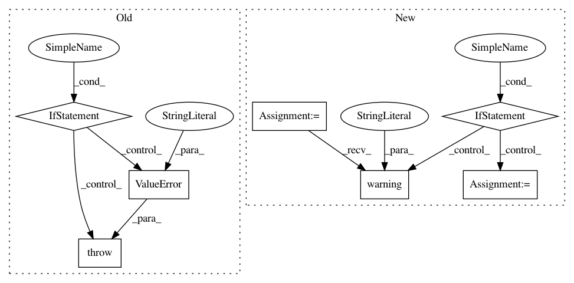

9a3a5f4ecfc2bdb2e6b34feec20869528d5d7661,art/estimators/classification/pytorch.py,PyTorchClassifier,__init__,#PyTorchClassifier#Any#Any#Any#Any#Any#Any#Any#Any#Any#Any#Any#Any#Any#Any#Any#,59
Before Change
if self._use_amp:
from apex import amp
if self._optimizer is None:
raise ValueError(
"An optimizer is needed to use the automatic mixed precision tool, but none for provided. "
)
if self.device.type == "cpu":
enabled = False
else:
enabled = True
After Change
if self._use_amp:
from apex import amp
if self._optimizer is None:
logger.warning(
"An optimizer is needed to use the automatic mixed precision tool, but none for provided. "
"A default optimizer is used."
)
// Create the optimizers
parameters = self._model.parameters()
self._optimizer = torch.optim.SGD(parameters, lr=0.01)
if self.device.type == "cpu":
enabled = False
else:
enabled = True
In pattern: SUPERPATTERN
Frequency: 5
Non-data size: 7
Instances
Project Name: IBM/adversarial-robustness-toolbox
Commit Name: 9a3a5f4ecfc2bdb2e6b34feec20869528d5d7661
Time: 2020-09-28
Author: M.N.Tran@ibm.com
File Name: art/estimators/classification/pytorch.py
Class Name: PyTorchClassifier
Method Name: __init__
Project Name: elfi-dev/elfi
Commit Name: c61a48cc0bdc8c5f748495a7e2567789cb748cad
Time: 2017-06-30
Author: jarno.lintusaari@aalto.fi
File Name: elfi/methods/parameter_inference.py
Class Name: BayesianOptimization
Method Name: set_objective
Project Name: ray-project/ray
Commit Name: 415be78cc0d1275a29d0ceda550d0d7a7a5224ea
Time: 2020-09-08
Author: amogkam@users.noreply.github.com
File Name: python/ray/util/sgd/torch/torch_trainer.py
Class Name: TorchTrainer
Method Name: __init__
Project Name: pfnet/optuna
Commit Name: 1065e85b335904177060014b1b6775ecd975a643
Time: 2020-03-13
Author: sano@preferred.jp
File Name: optuna/samplers/grid.py
Class Name: GridSampler
Method Name: sample_relative
Project Name: IBM/adversarial-robustness-toolbox
Commit Name: d5801e31dafe0320109862e9cd216213e62e92b5
Time: 2020-06-25
Author: M.N.Tran@ibm.com
File Name: art/estimators/object_detection/tensorflow_faster_rcnn.py
Class Name: TensorFlowFasterRCNN
Method Name: __init__